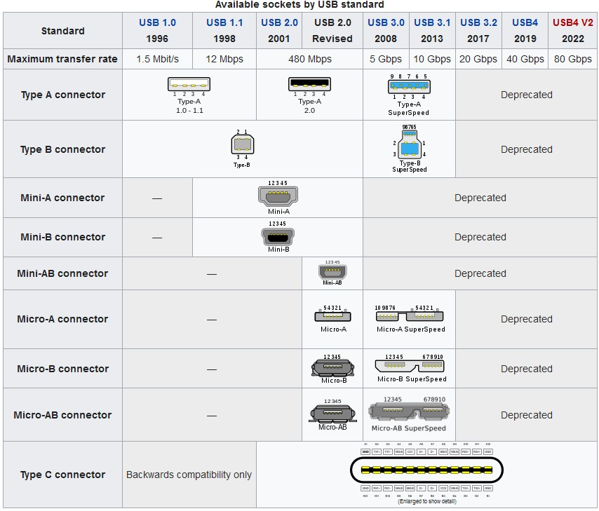

Lecture 3.1 - Computers’ and Ports#
There are plenty of common computer ports to go around, including ones we did not mention on this page. However a goal of this course to have you become familiar about common ports and their naming standards. To be able to think critically and an informed buyer when shopping for new a new computer, laptop, or phone. We do not ask you memorize all the different standards of ports for USB, HDMI, or Thunderbolt, but to understand at a high level all the different types of ports purposes and know there are different specifications beyond the advertisement that reads “USB 3 Port”.
USB (Universal Serial Bus)#
USB ports are used to connect a wide variety of devices to a computer, such as mice, keyboards, printers, and external hard drives. USB comes in many different varieties including slower data transferring USB 1.0 and 2.0, to today’s modern USB 3.0 type plugs.
The most common types of USB that remain include USB 3.X Type B for computer monitors and USB 2.0 Type B for printers which can usually be differentiated by the plug color. While USB 2.0 type Micro-B can still be found on devices that do not require USB 3.0 data transfer speeds. The current push for UBS modernization includes the popularization of UBS-C including it becoming a common standard in some countries.
USB Standards#
A brief explanation of different USB standards that exist today:
USB 1.x: USB 1.x is the first generation of USB, it was introduced in 1996, it has a maximum data transfer rate of 12 Mbps and it requires a separate power supply to operate high-power devices.
USB 2.0: USB 2.0 was introduced in 2000, it is backward compatible with USB 1.x, it increases the maximum data transfer rate to 480 Mbps, and it also supports higher power requirements.
USB 3.0: USB 3.0 was introduced in 2008, it is backward compatible with USB 2.0, it increases the maximum data transfer rate to 5 Gbps, and it also supports higher power requirements and new features such as improved power management and enhanced data transfer capabilities.
USB 3.1: USB 3.1 was introduced in 2013, it is backward compatible with USB 3.0, it increases the maximum data transfer rate to 10 Gbps and it also added new features such as improved power delivery and the ability to connect to external graphics cards.
USB 3.2: USB 3.2 was introduced in 2017, it is backward compatible with USB 3.0. It notable deprecates the USB Type A, B, Micro-A, and Micro B connector types and increases the speed to 20 Gbps. Relying on USB-C Type C connectors, it was able to double USB 3.1’s link speed to 20 Gbps.
Below is an overview of the transfer speeds and supported connector types over the years.

After this point, the USB committee continues to change their standard naming scheme and modernized specifications, however at the time of writing, the following is another synopsis of the current USB environment. USB4 and USB4 V2 exist however were introduced in 2019 and 2022 respectively; however very few devices support the data transfer speeds of 40 Gbps and 80 Gbps respectively.
Because of USB C’s standardization, the USB-IF (Implementers Forum) professional recommendation is to use logos both on the packaging and cable to help distinguish different speeds of which the cable is rated for.

Building on consumer confusion, Thunderbolt is another technology that aims to use USB-C connectors to bring additional capability to high-performance devices.
Thunderbolt#
Thunderbolt is a high-speed technology that allows users to connect multiple devices at once; it supports high-resolution displays and high-performance data devices and is a versatile port that can be used for many purposes. As the standards progressed, they increased the data transfer speed, added support for higher resolutions, and expanded the capabilities of daisy chaining and power delivery.
Thunderbolt aspires to clean up all the different types of USB Standards, noted by the single value standard versioning. Developed by Intel and Apple, it remains a proprietary technology to both companies.
Thunderbolt Standards#
Thunderbolt 1: Introduced in 2011, it uses a Mini DisplayPort connector and supports data transfer speeds of up to 10 Gbps and display resolutions of up to 2560x1600.
Thunderbolt 2: Introduced in 2013, it uses the same connector as Thunderbolt 1 and supports data transfer speeds of up to 20 Gbps and display resolutions of up to 4096x2160. It also added support for daisy-chaining multiple peripherals.
Thunderbolt 3: Introduced in 2015, it uses a USB-C connector and supports data transfer speeds of up to 40 Gbps and display resolutions of up to 5120x2880. It also added support for dual 4K displays, and it can supply power to connected devices.
Thunderbolt 4: Introduced in 2020, it uses a USB-C connector, supports data transfer speeds of up to 40 Gbps, and it supports 8K displays. It also added support for daisy-chaining up to six devices, it has a minimum performance requirement for docks, and it supports a wider range of protocols such as NVMe, PCIe and DisplayPort.
An important note about Thunderbolt and USB: Thunderbolt 4 and USB4 share the same underlying protocol, Thunderbolt 4 includes more compatibility requirements than USB4 does. Meaning if your device supports Thunderbolt 4, it will encompass all the capability of USB up to the present version: USB 4 40.
Ethernet#
Ethernet ports are used to connect a computer to a wired network, it is usually used for wired internet connection. Ethernet cables and their respective standards can be found in Lecture 4.
HDMI (High-Definition Multimedia Interface)#
HDMI ports are used to connect a computer to a monitor or TV, allowing the computer to output video and audio. It is important to know the types of HDMI ports through the electronics space. On televisions, laptops, and computers you find HDMI ports most common, however not all ‘HDMI’s, are created equal:
HDMI 1.0: HDMI 1.0 was introduced in 2002, it supports resolutions up to 1080p and a maximum refresh rate of 60Hz.
HDMI 1.1: HDMI 1.1 was introduced in 2004, it added support for DVD-Audio and it allowed the transmission of multi-channel audio.
HDMI 1.2: HDMI 1.2 was introduced in 2005, it added support for One Bit Audio, and it also allowed the transmission of SACD audio.
HDMI 1.3: HDMI 1.3 was introduced in 2006, it added support for higher resolution video up to 1080p, and it also increased the maximum color depth to 36-bits.
HDMI 1.4: HDMI 1.4 was introduced in 2009, it added support for 3D video, and it also added support for Audio Return Channel (ARC) and HDMI Ethernet Channel (HEC).
HDMI 2.0: HDMI 2.0 was introduced in 2013, it supports resolutions up to 4K (3840x2160) at a maximum refresh rate of 60Hz and it also added support for high dynamic range (HDR) video.
HDMI 2.1: HDMI 2.1 was introduced in 2017, it supports resolutions up to 10K and a maximum refresh rate of 120Hz. It also added support for other features such as eARC (enhanced Audio Return Channel) and Variable Refresh Rate (VRR)
Currently, HDMI 2.1 is the most ‘future proof’ HDMI port that supports 4K beyond 60 Hz for computer applications or even game consoles in the future.
DisplayPort#
DisplayPort is a digital display interface mainly used to connect a video source to a display device such as a monitor, it’s similar to HDMI but with some advantages such as support for higher resolutions, refresh rates and multiple monitors.
VGA (Video Graphics Array)#
VGA ports are used to connect a computer to a monitor, allowing the computer to output video. This standard has been largely phased out but you can still see it on monitors today.
Audio ports#
Audio ports are used to connect speakers, headphones, or a microphone to a computer, allowing the computer to output sound or input sound. These ports are also described as 3.5 mm audio jacks, as they are 3.5 mm in size.
Additional Note#
There are plenty of additional ports in the electronics and computing space that are less popular for the consumer industry but are for professional or business suited applications.